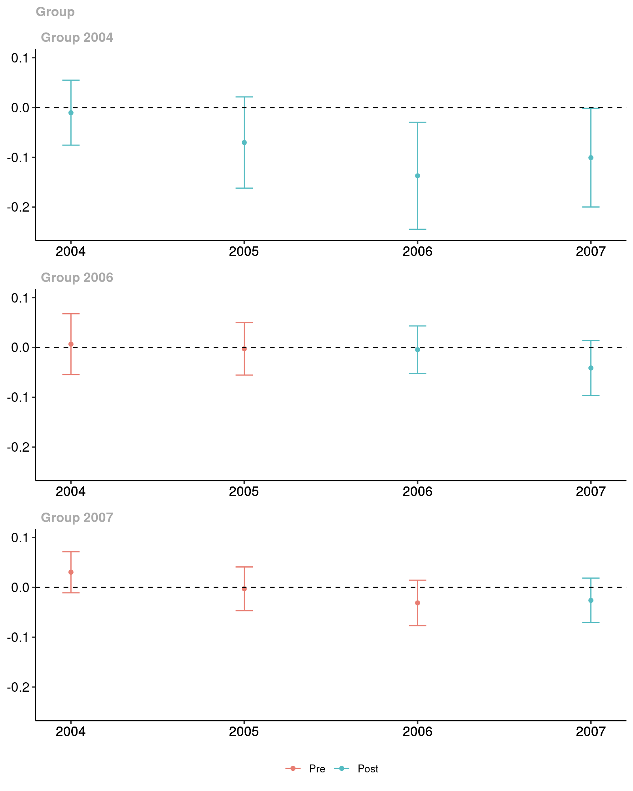
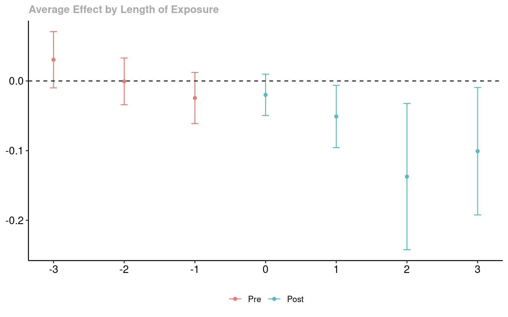

The did package contains tools for computing average treatment effect parameters in a Difference-in-Differences setup allowing for
More than two time periods
Variation in treatment timing (i.e., units can become treated at different points in time)
Treatment effect heterogeneity (i.e, the effect of participating in the treatment can vary across units and exhibit potentially complex dynamics, selection into treatment, or time effects)
The parallel trends assumption holds only after conditioning on covariates
The main parameters are group-time average treatment effects. These are the average treatment effect for a particular group (group is defined by treatment timing) in a particular time period. These parameters are a natural generalization of the average treatment effect on the treated (ATT) which is identified in the textbook case with two periods and two groups to the case with multiple periods.
Group-time average treatment effects are also natural building blocks for more aggregated treatment effect parameters such as overall treatment effects or event-study-type estimands.
Getting Started
There has been some recent work on DiD with multiple time periods. The did package implements the framework put forward in
- Callaway, Brantly and Pedro H.C. Sant’Anna. “Difference-in-Differences with Multiple Time Periods.” Journal of Econometrics, Vol. 225, No. 2, pp. 200-230, 2021. or arXiv
Higher level discussions of issues are available in
Installation
You can install did from CRAN with:
install.packages("did")or get the latest version from github with:
# install.packages("devtools")
devtools::install_github("bcallaway11/did")A short example
The following is a simplified example of the effect of states increasing their minimum wages on county-level teen employment rates which comes from Callaway and Sant’Anna (2021).
A subset of the data is available in the package and can be loaded by
The dataset contains 500 observations of county-level teen employment rates from 2003-2007. Some states are first treated in 2004, some in 2006, and some in 2007 (see the paper for more details). The important variables in the dataset are
lemp This is the log of county-level teen employment. It is the outcome variable
first.treat This is the period when a state first increases its minimum wage. It can be 2004, 2006, or 2007. It is the variable that defines group in this application
year This is the year and is the time variable
countyreal This is an id number for each county and provides the individual identifier in this panel data context
To estimate group-time average treatment effects, use the att_gt function
out <- att_gt(yname = "lemp",
gname = "first.treat",
idname = "countyreal",
tname = "year",
xformla = ~1,
data = mpdta,
est_method = "reg"
)att_gt returns a class MP object. This has a lot of information, but most importantly is has estimates of the group-time average treatment effects and their standard errors. To see these, we can call the summary function
summary(out)
#>
#> Call:
#> att_gt(yname = "lemp", tname = "year", idname = "countyreal",
#> gname = "first.treat", xformla = ~1, data = mpdta, est_method = "reg")
#>
#> Reference: Callaway, Brantly and Pedro H.C. Sant'Anna. "Difference-in-Differences with Multiple Time Periods." Journal of Econometrics, Vol. 225, No. 2, pp. 200-230, 2021. <https://doi.org/10.1016/j.jeconom.2020.12.001>, <https://arxiv.org/abs/1803.09015>
#>
#> Group-Time Average Treatment Effects:
#> Group Time ATT(g,t) Std. Error [95% Simult. Conf. Band]
#> 2004 2004 -0.0105 0.0235 -0.0747 0.0537
#> 2004 2005 -0.0704 0.0328 -0.1600 0.0192
#> 2004 2006 -0.1373 0.0378 -0.2403 -0.0342 *
#> 2004 2007 -0.1008 0.0331 -0.1912 -0.0104 *
#> 2006 2004 0.0065 0.0236 -0.0578 0.0708
#> 2006 2005 -0.0028 0.0205 -0.0587 0.0532
#> 2006 2006 -0.0046 0.0192 -0.0570 0.0478
#> 2006 2007 -0.0412 0.0200 -0.0959 0.0134
#> 2007 2004 0.0305 0.0162 -0.0138 0.0748
#> 2007 2005 -0.0027 0.0174 -0.0501 0.0446
#> 2007 2006 -0.0311 0.0194 -0.0840 0.0219
#> 2007 2007 -0.0261 0.0178 -0.0746 0.0225
#> ---
#> Signif. codes: `*' confidence band does not cover 0
#>
#> P-value for pre-test of parallel trends assumption: 0.16812
#> Control Group: Never Treated, Anticipation Periods: 0
#> Estimation Method: Outcome RegressionThis provides estimates of group-time average treatment effects for all groups in all time periods. Group-time average treatment effects are identified when t >= g (these are post-treatment time periods for each group), but summary reports them even in periods when t < g – these can be used to pre-test for the parallel trends assumption. The P-value for pre-test of parallel trends assumption is for a Wald pre-test of the parallel trends assumption. Here the parallel trends assumption would not be rejected at conventional significance levels.
It is often also convenient to plot the group-time average treatment effects. This can be done using the ggdid command:

The red dots in the plot are pre-treatment group-time average treatment effects . Here they are provided with 95% simultaneous confidence intervals. These are the estimates that can be interpreted as a pre-test of the parallel trends assumption. The blue dots are post-treatment group-time average treatment effects. Under the parallel trends assumption, these can be interpreted as policy effects – here the effect of the minimum wage on county-level teen employment due to increasing the minimum wage.
Event Studies
Although in the current example it is pretty easy to directly interpret the group-time average treatment effects, there are many cases where it is convenient to aggregate the group-time average treatment effects into a small number of parameters. A main type of aggregation is into an event study plot.
To make an event study plot in the did package, one can use the aggte function
es <- aggte(out, type = "dynamic")Just like for group-time average treatment effects, these can be summarized and plotted. First, the summary
summary(es)
#>
#> Call:
#> aggte(MP = out, type = "dynamic")
#>
#> Reference: Callaway, Brantly and Pedro H.C. Sant'Anna. "Difference-in-Differences with Multiple Time Periods." Journal of Econometrics, Vol. 225, No. 2, pp. 200-230, 2021. <https://doi.org/10.1016/j.jeconom.2020.12.001>, <https://arxiv.org/abs/1803.09015>
#>
#>
#> Overall summary of ATT's based on event-study/dynamic aggregation:
#> ATT Std. Error [ 95% Conf. Int.]
#> -0.0772 0.0216 -0.1196 -0.0348 *
#>
#>
#> Dynamic Effects:
#> Event time Estimate Std. Error [95% Simult. Conf. Band]
#> -3 0.0305 0.0153 -0.0101 0.0712
#> -2 -0.0006 0.0134 -0.0361 0.0350
#> -1 -0.0245 0.0155 -0.0656 0.0166
#> 0 -0.0199 0.0126 -0.0533 0.0135
#> 1 -0.0510 0.0163 -0.0941 -0.0078 *
#> 2 -0.1373 0.0387 -0.2398 -0.0347 *
#> 3 -0.1008 0.0376 -0.2006 -0.0011 *
#> ---
#> Signif. codes: `*' confidence band does not cover 0
#>
#> Control Group: Never Treated, Anticipation Periods: 0
#> Estimation Method: Outcome RegressionThe column event time is for each group relative to when they first participate in the treatment. To give some examples, event time=0 corresponds to the on impact effect, and event time=-1 is the effect in the period before a unit becomes treated (checking that this is equal to 0 is potentially useful as a pre-test).
To plot the event study, use ggdid
ggdid(es)
The figure here is very similar to the group-time average treatment effects. Red dots are pre-treatment periods, blue dots are post-treatment periods. The difference is that the x-axis is in event time.
Overall Effect of Participating in the Treatment
The event study above reported an overall effect of participating in the treatment. This was computed by averaging the average effects computed at each length of exposure.
In many cases, a more general purpose overall treatment effect parameter is give by computing the average treatment effect for each group, and then averaging across groups. This sort of procedure provides an average treatment effect parameter with a very similar interpretation to the Average Treatment Effect on the Treated (ATT) in the two period and two group case.
To compute this overall average treatment effect parameter, use
group_effects <- aggte(out, type = "group")
summary(group_effects)
#>
#> Call:
#> aggte(MP = out, type = "group")
#>
#> Reference: Callaway, Brantly and Pedro H.C. Sant'Anna. "Difference-in-Differences with Multiple Time Periods." Journal of Econometrics, Vol. 225, No. 2, pp. 200-230, 2021. <https://doi.org/10.1016/j.jeconom.2020.12.001>, <https://arxiv.org/abs/1803.09015>
#>
#>
#> Overall summary of ATT's based on group/cohort aggregation:
#> ATT Std. Error [ 95% Conf. Int.]
#> -0.031 0.0125 -0.0554 -0.0066 *
#>
#>
#> Group Effects:
#> Group Estimate Std. Error [95% Simult. Conf. Band]
#> 2004 -0.0797 0.0283 -0.1427 -0.0168 *
#> 2006 -0.0229 0.0168 -0.0603 0.0145
#> 2007 -0.0261 0.0176 -0.0651 0.0130
#> ---
#> Signif. codes: `*' confidence band does not cover 0
#>
#> Control Group: Never Treated, Anticipation Periods: 0
#> Estimation Method: Outcome RegressionOf particular interest is the Overall ATT in the results. Here, we estimate that increasing the minimum wage decreased teen employment by 3.1% and the effect is marginally statistically significant.